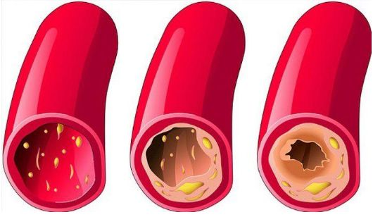
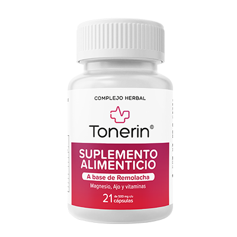

¡La edad no es un obstáculo para tu vida! Un cardiólogo de 109 años de edad comparte el secreto de su longevidad y excelente salud.
El Dr. Acebedo asegura que el secreto de la longevidad se basa en los vasos sanguíneos. Si están limpios y sanos, puedes vivir hasta 120 años e incluso más, y sentirte completamente sano. El cardiólogo confirmó completamente esta afirmación.
Nuestro reportero ha logrado entrevistar al Dr. Acebedo, que nos ha explicado su método de limpieza de los vasos sanguíneos para prolongar la vida.
A sus 109 años, el Dr. Acebedo ha sido felicitado por el presidente. Una foto del lugar de trabajo del Dr. Acebedo.
- Sr. Acebedo, usted ha asegurado varias veces que tener los vasos sanguíneos limpios es la base de la salud. ¿Por qué?
- Es muy sencillo. El funcionamiento de los órganos y sistemas del organismo depende de la calidad de la circulación sanguínea. La circulación sanguínea tiene la función de suministrar oxígeno y nutrientes a los órganos internos, así como también recolectar el dióxido de carbono y los productos metabólicos. Durante la infancia, la adolescencia y la juventud, nos movemos más, los vasos son nuevos, elásticos, limpios, la nutrición de los órganos es máxima. Con la edad, nos movemos menos y nuestros vasos comienzan a ensuciarse. Esto es debido a muchos factores, no todos perjudiciales (como fumar, comer de forma poco saludable, un entorno pobre, un estilo de vida sedentario), sino también naturales (depósito de lípidos, proceso que tiene lugar en todos los organismos).
¿Qué significa tener los vasos sanguíneos ''sucios''? Imagínate unas tuberías llenas de óxido. ¿Qué ocurre? La presión del agua aumenta, y el agua sabe mal. Lo mismo sucede con los vasos sanguíneos. Cuando el colesterol u otras sustancias se depositan en ellos, la presión aumenta ( ¡los vasos sucios son la principal causa de la hipertensión! ), la sangre contiene impurezas, la circulación sanguínea se ve alterada. Como resultado, se producen cambios en todos los órganos y sistemas del cuerpo. Incluso la piel es un sistema.
El cuerpo humano envejece. Si eres cuidadoso y mantienes limpios tus vasos sanguíneos, tendrás la posibilidad de vivir al menos 20 años sin sufrir dolor en los órganos ni en las articulaciones, y tu organismo funcionará de manera excelente. En otras palabras, limpiar los vasos sanguíneos puede prolongar tu vida y tu salud. Y no es solo una teoría. Yo le he recomendado este método a mis pacientes y también lo pongo en práctica personalmente. Todos aquellos que han sabido escuchar mi consejo se encuentran mejor que muchas personas de su misma edad.

Así es cómo se produce la suciedad gradual de los vasos. Si nunca has limpiado tus vasos sanguíneos y tienes más de 40 años, tendrán muchas impurezas. Esto puede afectar a tu salud, o incluso puede que este proceso de deterioro ya haya comenzado.- ¿Qué tipo de patologías pueden causar unos vasos sanguíneos "sucios"?
- Como ya he mencionado, todo el organismo sufre. Pero, en primer lugar, los órganos y sistemas que están conectados directamente con la circulación sanguínea se ven afectados (el sistema cardiovascular).
A nivel nacional, esta es una situación grave. La mortalidad por enfermedades cardiovasculares es 4 veces mayor que por otras causas. Los médicos son conscientes del problema y comprenden la importancia de la limpieza de los vasos sanguíneos, pero para la medicina mexicana esto no es una prioridad. Los médicos recetan medicamentos para la hipertensión que reducen temporalmente la presión arterial, pero no curan. Los vasos sanguíneos de los pacientes hipertensos necesitan una limpieza profunda. Este método se utiliza desde hace más de 50 años en Europa y EE. UU. Para las personas de 35-40 años, es estrictamente necesario porque están en riesgo de padecer una enfermedad cardiovascular.
- ¿Hay algún síntoma que nos permita saber que tenemos depósitos en los vasos sanguíneos?
- Por supuesto que hay. Los principales síntomas son:
- Migrañas
- Problemas de memoria
- Insomnio
- Problemas íntimos
- Trastornos de vista y audición
- Alta presión sanguínea
- Alteraciones respiratorias y angina de pecho
- Color pálido de la piel de las piernas
- Dolor muscular y articular
Independientemente de si tienes o no uno de estos síntomas, después de los 30 es necesario limpiar los vasos sanguíneos al menos una vez cada 5 años. De esta manera, gozarás de una salud de hierro.
Los vasos sanguíneos tienen la capacidad de acumular impurezas, especialmente en el caso de las personas mayores. Para que eso ocurra, no es necesario estar comiendo hamburguesas o patatas fritas todo el día. Incluso después de comer una salchicha o un huevo frito, se depositará una cierta cantidad de colesterol en las células sanguíneas que, con el tiempo, aumentará.
- Por favor, cuéntenos su secreto para limpiar los vasos sanguíneos.
Hasta hace poco, el proceso de limpieza de las células sanguíneas me llevaba unos cuantos meses. Recolectaba hierbas medicinales, las buscaba en el mercado o las pedía por Internet y preparaba una infusión con ellas. Ahora, ya no necesito hacer eso, ya que mis colegas del centro de investigación han creado un producto bueno y barato para limpiar los vasos: Tonerin. De hecho, este producto regula la presión arterial.

TonerinEste producto no contiene ingredientes artificiales, solo extractos y polvos de plantas naturales que limpian el sistema circulatorio. Por eso es tan beneficioso.
La mayoría de los pacientes me siguen pidiendo consejo para la purificación de los vasos sanguíneos. Últimamente, solo les recomiendo este producto. Es altamente efectivo.
Tonerin Ingredientes:
Ajo: reduce el colesterol malo, ayuda a limpiar las
arterias y es excelente para combatir virus. (1, 3)
Maiz morado: mejora la salud cardiovascular, es
excelente para combatir el sobrepeso.
Sacha Inchi: es ideal para las personas adultas debido
a que reduce el envejecimiento, minimiza el estrés y el
agotamiento físico; este es el componente estrella de este
producto ya que es utilizado frecuentemente por los incas para
mejorar la salud, limpiar las arterias. (5)
Arándano: es excelente para persona con sobrepeso,
disminuye los niveles de colesterol en sangre y ayuda a
quienes sufren de hipertensión. (4)
Remolacha: favorece la presencia de colesterol bueno,
contiene vitaminas que limpia las arterias, es excelente para
cuidar el corazón y para mejorar el funcionamiento del
hígado.
Yacon: reduce el porcentaje de grasa en el cuerpo,
ayuda a mejorar el metabolismo y lograr la perdida de peso,
controla el colesterol.
Penca de tuna Moringa: planta de origen natural que
tiene múltiples beneficios para la salud de las personas de
todas las edades, mejora la circulación y limpia arterias.
Té verde y uva: optimiza el funcionamiento del
metabolismo, mejora la circulación.
- ¿Cuánto cuesta Tonerin y dónde podemos comprarlo?
Usted sabe que la pensión no permite comprar fármacos caros. No podría recomendar algo así. Tonerin no es caro y, en este momento, hay disponible una oferta. Como resultado, todo el mundo puede comprar Tonerin con un 50% de descuento.
Más detalles sobre cómo conseguir Tonerin con envío a todo el país
Para pedir Tonerin, es necesario:
- Rellenar el formulario del sitio web oficial .
- El director se pondrá en contacto contigo para confirmar la dirección de entrega.
- En 4-7 días (el plazo de entrega), recibirás Tonerin en la oficina postal.
Para mantener la pureza de los vasos sanguíneos, recomiendo repetir el tratamiento cada 1-2 años. Especialmente en el caso de personas mayores. Te ayudará a fortalecer tu salud y posponer la aparición de los signos del envejecimiento. Unos vasos sanguíneos limpios son garantía de salud.
- Sr. Acebedo, gracias por habernos revelado detalles tan importantes en esta entrevista.
Fuera de cámaras, el Sr. Acebedo nos confesó que le gusta trabajar en el jardín y ayudar a sus hijos, que ya están en edad de jubilación. Su esposa también es longeva, tiene 99 años. Ambos hacen tratamientos para limpiar los vasos sanguíneos. El profesor cree que es lo único que los mantiene con vida.
ACTUALIZAT : ¡Importante! Durante esta promoción, Tonerin se puede comprar con un 50% de descuento o por tan solo 590 MXN. Durante la promoción, cualquiera puede comprar el producto por 590 MXN, simplemente ingrese su nombre y teléfono en el formulario a continuación. Después de eso, un especialista se pondrá en contacto con usted y le informará a detalle sobre Tonerin.
Completa el formulario y obtén un 50% de descuento:
1180 MXN
590 MXN
Comentarios
Clara F. MEXICALI
¡Gracias! El artículo es muy interesante. Ya he hecho mi pedido de Tonerin.
Raúl PUEBLA
Ya he comprado y probado Tonerin. Sufro de presión arterial alta desde hace 7 años. Ya no recuerdo aquellos momentos de mi vida en que tenía la presión arterial normal. Por recomendación del médico, decidí que tenía que limpiar mis vasos. Después de un mes de tratamiento con Tonerin, mi presión arterial recuperó valores normales. Ya han pasado 2 meses desde que no tengo la presión arterial alta. Ahora mi vida es diferente. Me siento mil veces mejor. Recomiendo este excelente producto a todo el mundo, y con este descuento, es casi un regalo.
Alex TIJUANA
Yo también me he tratado durante un mes con Tonerin. Me siento más saludable y más fuerte. Me siento más joven.
Laura LEÓN
Gracias. Ya lo he pedido. Me gusta el hecho de que realicen envíos por correo a todas partes.
Jaime MÉRIDA
El paquete me llegó ayer. Así es el producto. Voy a hacer el tratamiento de limpieza con mi esposa. Nos hemos hecho unas pruebas hace poco y los resultados dicen que tenemos los vasos obstruidos con colesterol.
Amelia CHIHUAHUA
Hace un mes que comencé el tratamiento con Tonerin. A veces, tenía la presión arterial alta y el ritmo cardíaco irregular. Ya llevo usándolo 2 semanas. Mi presión arterial ha vuelto a la normalidad. Me siento completamente sana.
Cristina MONTERREY
Tengo 61 años. Llevo haciéndome tratamientos para limpiar los vasos desde hace 5 años. Me ayudan a conservar mi salud y me dan fuerzas. No tengo ninguna enfermedad, aunque muchos de mis amigos ya han fallecido. Todavía tengo relacionados sexuales. ¡Es absolutamente necesario limpiar los vasos sanguíneos!
María del Carmen ZAPOPAN
He tratado mi presión arterial alta con este medicamento. Llevaba muchos años sufriendo por ello. Me hice un montón de tratamientos que no sirvieron para nada. Decidí probar Tonerin. Fue la primera vez que pedía medicamentos por Internet. Resultó ser muy sencillo.
Raquel JUAREZ
¡Gracias! He visto un programa de televisión en el que hablaban de este producto. Todos los médicos lo recomendaban. Afirmaban que limpiar los vasos sanguíneos es totalmente necesario para todo el mundo.
Alfredo ECATEPEC DE MORELOS
¡Este producto es altamente efectivo! ¡Doy fe! He tenido una presión arterial de 140/90 durante años. Después del tratamiento, mi presión volvió a 125/80. ¡Me siento muy bien!
Macarena SALTILLO
He leído toda la información sobre Tonerin en su sitio web . ¡Me ha parecido sorprendente e impresionante!
Juan S. CHALCO
¡He conseguido la oferta! ¡Gracias!
Víctor CIUDAD ACUÑA
Yo también seguí el tratamiento durante un mes (de forma interrumpida). Me siento mejor. Estoy repleto de fuerza y energía y he conseguido fortalecer mi sistema inmunológico. Me siento 10 años más joven. Tengo 72 años.
Lorena PUEBLA
Hace dos meses, yo también completé el tratamiento de limpieza con Tonerin. Cuando tenía los vasos obstruidos, siempre me sentía muy cansada, pero ahora tengo mucha energía. Consigo hacer más cosas durante el día. Antes tenía fuertes dolores de cabeza, ahora han desaparecido. También duermo mejor Por si acaso, he pedido unos cuantos paquetes más. ¡Gracias!
Este sitio web sólo tiene fines informativos y no asume responsabilidad alguna por la información promocional contenida en él, incluidos estudios, previsiones, estimaciones o la exactitud de la información contenida en cualquier anuncio relacionado con instrumentos financieros. El editorial no contiene información básica, no debe utilizarse para el autodiagnóstico médico y no sustituye una posible visita al médico. La oferta no pretende diagnosticar, tratar, curar ni prevenir ninguna enfermedad. El producto es un suplemento, no un medicamento. No cura enfermedades, y gracias a sus ingredientes y sus propiedades, apoya los efectos secundarios negativos de diversas enfermedades. La información en el sitio web se publica solo con fines informativos; no reemplaza un diagnóstico médico. Cada pieza de información no debe verse como una alternativa al diagnóstico médico, ni debe confundirse y reemplazarse con métodos de tratamiento y terapia clásicos. Los resultados no están garantizados bajo ninguna circunstancia, el posible éxito de cualquier tratamiento varía de paciente a paciente. Este blog no sustituye a un periódico, por lo que no existen plazos de publicación.
1. Ried K. (2020). Garlic lowers blood pressure in hypertensive subjects, improves arterial stiffness and gut microbiota: A review and meta-analysis. Experimental and therapeutic medicine, 19(2), 1472–1478. https://doi.org/10.3892/etm.2019.8374
2. Ried, K., & Fakler, P. (2014). Potential of garlic (Allium sativum) in lowering high blood pressure: mechanisms of action and clinical relevance. Integrated blood pressure control, 7, 71–82. https://doi.org/10.2147/IBPC.S51434
3. Karin Ried, Garlic Lowers Blood Pressure in Hypertensive Individuals, Regulates Serum Cholesterol, and Stimulates Immunity: An Updated Meta-analysis and Review, The Journal of Nutrition, Volume 146, Issue 2, February 2016, Pages 389S–396S. https://doi.org/10.1016/j.jand.2014.11.001
5. Gonzales, G. F., & Gonzales, C. (2014). A randomized, double-blind placebo-controlled study on acceptability, safety and efficacy of oral administration of sacha inchi oil (Plukenetia volubilis L.) in adult human subjects. Food and chemical toxicology : an international journal published for the British Industrial Biological Research Association, 65, 168–176. https://doi.org/10.1016/j.fct.2013.12.039
No es un medicamento, consulte a su médico.
Artículo publirreportaje. Estos son testimonios pagados. Todos los revisores fueron compensados por proporcionar sus reseñas de productos. Resultados no típicos.